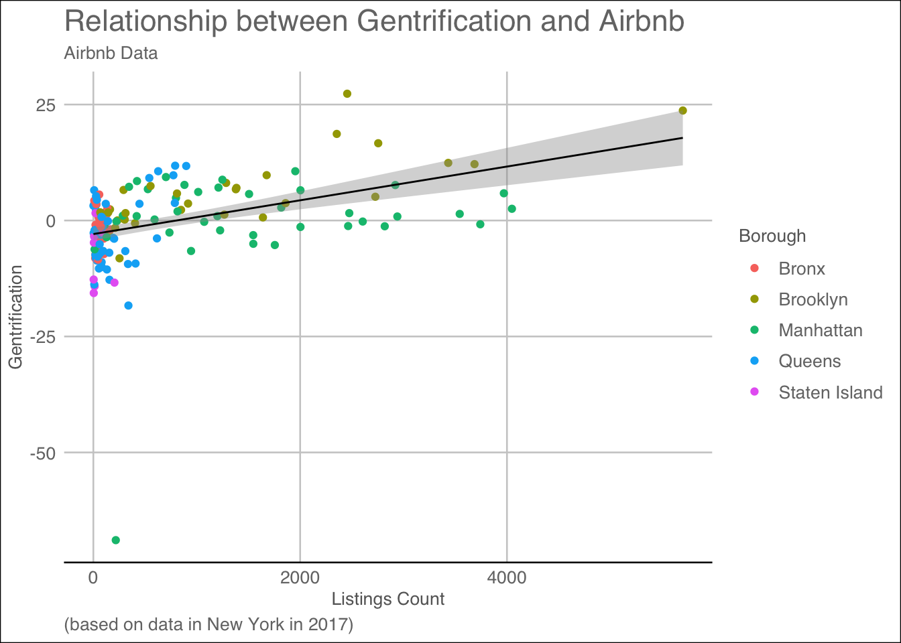

#Start by downloading packages and run library command, we want "zipcodeR", "ggmap", "osmdata", "tmaptools", "cowplot" as they will help us graph our visualization.pkgs <-c("ggplot2", "dplyr", "tidyr", "tidyverse","dslabs", "ggmap", "choroplethr","gapminder","choroplethrMaps", "CGPfunctions","ggcorrplot", "visreg", "psych","gcookbook", "forcats","survival", "survminer","ggridges", "ggpubr","GGally", "superheat","waterfalls", "factoextra","networkD3", "ggthemes","hrbrthemes", "ggpol","ggbeeswarm", "zipcodeR", "ggmap", "osmdata", "tmaptools", "cowplot", "gganimate","gridExtra")#install.packages(pkgs)
Code
#Load the library of each packageoptions(scipen=999, digits =3)library(ggplot2)library(ggfortify)library(car)
Loading required package: carData
Code
library(ggthemes)library(psych)
Attaching package: 'psych'
The following object is masked from 'package:car':
logit
The following objects are masked from 'package:ggplot2':
%+%, alpha
── Conflicts ────────────────────────────────────────── tidyverse_conflicts() ──
✖ psych::%+%() masks ggplot2::%+%()
✖ psych::alpha() masks ggplot2::alpha()
✖ dplyr::filter() masks stats::filter()
✖ dplyr::lag() masks stats::lag()
✖ dplyr::recode() masks car::recode()
✖ purrr::some() masks car::some()
ℹ Use the conflicted package (<http://conflicted.r-lib.org/>) to force all conflicts to become errors
Code
library(dplyr)library(ggpubr)library(sjPlot)
Registered S3 method overwritten by 'parameters':
method from
format.parameters_distribution datawizard
Code
library(zipcodeR)library(ggmap)
ℹ Google's Terms of Service: <https://mapsplatform.google.com>
ℹ Please cite ggmap if you use it! Use `citation("ggmap")` for details.
Code
library(osmdata)
Data (c) OpenStreetMap contributors, ODbL 1.0. https://www.openstreetmap.org/copyright
Code
library(tmaptools)library(cowplot)
Attaching package: 'cowplot'
The following object is masked from 'package:ggmap':
theme_nothing
The following objects are masked from 'package:sjPlot':
plot_grid, save_plot
The following object is masked from 'package:ggpubr':
get_legend
The following object is masked from 'package:lubridate':
stamp
The following object is masked from 'package:ggthemes':
theme_map
Code
library(gganimate)
No renderer backend detected. gganimate will default to writing frames to separate files
Consider installing:
- the `gifski` package for gif output
- the `av` package for video output
and restarting the R session
Code
library(gridExtra)
Attaching package: 'gridExtra'
The following object is masked from 'package:dplyr':
combine
##Abstract: The relationship between Airbnb and gentrification has piqued the interest of many urban planning and economic researchers (citation needed). The purpose of this research is to examine whether or not a correlational relationship exists between the two. I define gentrification as the increase of high-income earning, highly educated, and younger individuals in areas with increasing rent that were previously occupied by lower-income, less educated, and older individuals. Airbnb is an e-commerce multinational corporation that allows for short-term rentals, similar to hotels and hostels. It is decentralized, allowing anyone to rent out their home, apartment, or bedroom. My study analyzes the ways in which Airbnb can be used as a measure of gentrification, rather than a cause of this phenomenon. I hypothesize that as the number of white affluent educated citizens will increase, while the number of low-income black and people of color citizens decrease over the span of 20 years. I measure that by collecting census data and comparing with Airbnb data on the number of listings. I believe that the number of listings in a location can disproportionately measure housing costs, as landlords seek to profit from renovated and unrented lavish apartments. Thus, an increase in Airbnb listings should correlate with a decrease in traditionally marginalized communities in the neighborhood. Additionally, note that short-term rentals may contribute to gentrification by raising the cost of living and attracting more tourism. Airbnb also competes with local bed and breakfasts and other businesses that residents rely on for survival. However, this study explicitly examines Airbnb as a measure of gentrification, as gentrification does not have one genuine source, making it impossible to claim that Airbnb directly causes gentrification. To examine and measure gentrification, I situate our study in New York City, a prominent location in discussions of gentrification. New York has five boroughs, each with different socioeconomic standings. This wide variety of locations allows us to not only forecast the entire city but also analyze population breakdowns in specific neighborhoods.
##Literture Review: To investigate the relationship between the number of Airbnb listings and gentrification measures in disadvantaged communities of New York City, our project uses secondary data from a 2021 study published on the topic and data from the American Community Survey. The prior research, titled “Nowcasting Gentrification Using Airbnb Data ’’ (Jain et al., 2021), investigates how Airbnb data can be used to help predict gentrification levels in three different global cities, New York City, Los Angeles, and London. Since our research focuses exclusively on New York City, I only used the open-source data collected for New York City in our examination. The 2021 study calculated a gentrification score by subtracting a neighborhood index from the years 1998-2002 from the index for 2013-2017. Each neighborhood index was developed by averaging the mean values of education level, percentage of young people, median household income, and median gross rent of each zipcode during those specified years. The data from the study also included Airbnb data such as the number of listings, number of reviews per listing, and price per night of the listing collected from 2013-2017 aggregated at the neighborhood level. The specific variables used in our study are outlined in the following section. The data from the 2021 study (Jain et al.) did not include information on racial demographics. Since prior research has shown that gentrification disproportionately affects minorities (Feder, 2020), I felt it necessary that our study include race as a potential variable in our modeling of gentrification. To gather this information, I used data from the 2017 American Community Survey and the 2000 Decennial Census. While the data from the 2021 study spanned two different time frames, I felt these two specific years would capture the demographic information needed for this study. I then merged our race data and the data from the 2021 study at the neighborhood (zipcode) level to create one comprehensive dataset.
##(Story) To investigate the relationship between the number of Airbnb listings and gentrification measures in disadvantaged communities of New York City, our project uses secondary data from a 2021 study published on the topic and data from the American Community Survey. The prior research, titled “Nowcasting Gentrification Using Airbnb Data ’’ (Jain et al., 2021), investigates how Airbnb data can be used to help predict gentrification levels in three different global cities, New York City, Los Angeles, and London. The data from the 2021 study (Jain et al.) did not include information on racial demographics. Since prior research has shown that gentrification disproportionately affects minorities (Feder, 2020), I felt it necessary that our study include race as a potential variable in our modeling of gentrification. To gather this information, I used data from the 2017 American Community Survey and the 2000 Decennial Census. While the data from the 2021 study spanned two different time frames, I felt these two specific years would capture the demographic information needed for this study. I then merged our race data and the data from the 2021 study at the neighborhood (zipcode) level to create one comprehensive dataset. After creating the new data set I were left with 172 observations with 42 variables. Each observation describes how many Airbnbs were listed in an area by zipcode, and what the demographics of that area was in 2000 and in 2017 to measure if the change in time coincides with the listings in the observation.
##Research Question Can short-term rentals, like Airbnb, be used as a predictive measure of gentrification in disadvantaged communities of New York City?
##Hypotheses: There will be a significant negative relationship between the percentage of people of color and the number of Airbnb listings in that neighborhood. There will be a significant positive relationship between the percentage of people with a bachelor’s degree and the number of Airbnb listings in that neighborhood. There will be a significant positive relationship between the median household income and the number of Airbnb listings in that neighborhood. There will be a significant positive relationship between the median gross rent and the number of Airbnb listings in that neighborhood.
##Data Merging and Cleaning
Code
#First we insert all the excel sheets that we wish to merge and clean up. I first insert my racial data from 2017 and 2000 and my NYC Airbnb data. I rename my Airbnb dataset and merge my datasets by zipcode.#RACE_DATA_2017_CLEANED_ <- read_excel("RACE DATA 2017 (CLEANED).xlsx")#RACE_DATA_2000_CLEAN_ <- read_excel("RACE DATA 2000 (CLEAN).xlsx")#nyc_data_clean <- read_csv("nyc_data_clean.csv")#race_17<-race_data_2017#airbnb<-nyc_data_clean#df_2017 <- merge(airbnb, race_17[c("zipcode","TPOP_17","POPWPER_17","POPBAAPER_17"
[1] "POPBAAPER_17"
Code
# )],# by = "zipcode", all.x = TRUE)#race_00<-race_data_2000#df<- merge(df_2017, race_00[c("zipcode","TPOP_2000","POPWPER_2000",# "POPBAAPER_2000" # ,# by = "zipcode", all.x = TRUE)
Code
#After merging both datasets, I wish to omit any variables with n/a,#df <- na.omit(df)
Code
#Code for POC by subtracting the white values from 100.#df$POCPER_17 <- 100 - as.numeric(df$POPWPER_17)#df$POCPER_2000 <- 100 - as.numeric(df$POPWPER_2000)#Create variable for our new gentrification measure#df$t1_index_new <- 1/5 * (df$t1_age_perc + df$t1_income_perc + df$t1_house_perc + df$t1_edu_perc + as.numeric(df$POPWPER_2000))#df$t2_index_new <- 1/5 * (df$t2_age_perc + df$t2_income_perc + df$t2_house_perc + df$t2_edu_perc + as.numeric(df$POPWPER_17))#df$index_change_new <- df$t2_index_new - df$t1_index_new
Once we have the dataframe we wish to work with we can export it as a new excel sheet and being to work.
Rows: 174 Columns: 34
── Column specification ────────────────────────────────────────────────────────
Delimiter: ","
dbl (33): zipcode, index_change, index_change_new, t1_index_perc, t1_index_n...
lgl (1): disadvantaged
ℹ Use `spec()` to retrieve the full column specification for this data.
ℹ Specify the column types or set `show_col_types = FALSE` to quiet this message.
##Data Cleaning continued: Once we wish to clean our data all the way up until its ready for visualization use. In this section I made three new variables, a index for 2000, and index for 2017 and a dummy gentrification varibable. I coded all of the zipcodes into their respective boroughs and longitude and latitudinal points.
Code
#Here I realized that the gentrification score is incorrect because before it measured rate of white change, which would be negliable in comparison to rate of black change. ZipDF$t1_index_new1 <-1/5* (ZipDF$t1_age_perc + ZipDF$t1_income_perc + ZipDF$t1_house_perc + ZipDF$t1_edu_perc +as.numeric(ZipDF$POPBAAPER_2000))ZipDF$t2_index_new2 <-1/5* (ZipDF$t2_age_perc + ZipDF$t2_income_perc + ZipDF$t2_house_perc + ZipDF$t2_edu_perc +as.numeric(ZipDF$POPBAAPER_17))#Create a new index counter based off the black population changeZipDF$index_change_new1 <- ZipDF$t2_index_new2 - ZipDF$t1_index_new1#Create a variable for GentrificationZipDF$Gentrification <-with(ZipDF, ifelse(ZipDF$index_change_new1 >=0, 'False', 'True'))
This gentrification index number is used to calculate how gentrified a place is. Is the gentrification score is negative then gentrification has occured and we have witnessed a dip in the total population. If the number is positive then the gentrification did not occur because there is growth occuring in these districtes and the second index number is higher than the first.
As apart of our visualization plan, we wish to plot on a map. So we have to clean our variables up in order to recieve the Longitude and Latitude points are needed. So I used to ZipcodeR package to iterate through the data set and convert all of the zipcodes into data points. The code reads, for every charater in the dataframe Zipdf, search the zipcode column, IF the zc produces a location, take the location and get the geocode for it, and if the geocode is greater than one, use the geocode to take the longitude and the latitiude of the zipcode and turn it into a variable.
Code
#Create a variable for Lat & LongZipDF$Latitude <-NAZipDF$Longitude <-NA# iterate through each row of the ZipCode column and fill in latitude and longitudefor (i inseq_len(nrow(ZipDF))) { zc <-as.character(ZipDF$zipcode[i])if (nzchar(zc)) { gc <-geocode_zip(zc)if (length(gc) >0) { ZipDF$Latitude[i] <- gc$lat ZipDF$Longitude[i] <- gc$lng } } }#Code the $Zipcode into boroughs to discuss the affects of each borough individually.ZipDF$Borough <-with(ZipDF, ifelse(ZipDF$zipcode >=10000& ZipDF$zipcode <=10282, 'Manhattan', ifelse(ZipDF$zipcode >=10300& ZipDF$zipcode <=10314, 'Staten Island', ifelse(ZipDF$zipcode >=10449& ZipDF$zipcode <=10476, 'Bronx', ifelse((ZipDF$zipcode >=11000& ZipDF$zipcode <=11111) | (ZipDF$zipcode >=11350& ZipDF$zipcode <=11698), 'Queens', ifelse(ZipDF$zipcode >=11200& ZipDF$zipcode <=11257, 'Brooklyn', 'Non-NYC'))))))
After coding for every Longitude and Latitude, I used the ifelse function to code all of the zipcodes into their respective boroughs in order to visualize the data and the locational features of its origins. All zipcodes from 10000-10282 belong with Manhattan, all zipcodes 10300-10314 go with Staten Island, all zipcodes betwenn 10449&10476 go with Bronx, all zipcodes between 11350 & 11698 assign to Queens and finally any zipcodes between 11200 & 11257 assign to Brooklyn as variables to the zipcode.
#The variables i am interest in are: Boroughs which is categorical, Popbaaper, Popwper & POCper 2000 & 2017 which are all continuous. t1_income_perc, t1_house_perc,# t2_index_perc, t2_index_new1, t2_age_perc, t2_edu_perc,# t2_income_perc, t2_house_perc, count_listings, are all continous varibales.
##Visualizations First in order to test our initial theory, we wish to graph some correlations. One we can examine is how price and count look in each borough.
Code
#One we can examine is how price and count look in each borough.ggplot(ZipDF, aes(x=count_listings, y=price, color = Borough))+geom_point(fill="forest green")+labs(x ="Listings Count", y ="Price")
We see that with price and listing per each borough remains stagnant no matter the borough and each borough no matter how many listings has a price cap. The average Manhattan airbnb did not cross $250 a night in 2017. The average airbnb in Brooklyn did not cross 200 a night. So there is no true correlation between the price of each listing and what borough they fall into. I think what is important to discuss is the cost of each set zone of listings per borough. Manhattan and Brooklyn both have high prices and high listings. Much higher than those of Staten island, Bronx and somewhat of Queens.
Code
#One we can examine is how price and count look in each borough.ggplot(ZipDF, aes(x=star_rating, y=price,))+geom_point(fill="forest green")+labs(x ="Star Rating", y ="Listings Count")+facet_wrap(~Borough)
This is a visualization where we want to facet_wrap instead of color by borough because we wish to see the correlation of listings and star ratings. In the Bronx, there is a positive correlation with price increasing as start count increasing. We witness that same trend in every borough where the price will only increase based off how many stars are around. We see that Manhattan has the highest rated Airbnbs overall. Staten island has the most costly 5 star airbnb.
After cleaning up the data and coding the data, I wanted to see where all the data points fell. First things first, I want to visualize where all the listings are on a map to see where the airbnb population fall in the city. First use the package ggmap and tmaptools to grab and past a map to see its intercepts. Then plot the map using geom_point by borough.
Code
library(ggmap)library(tmaptools)newyorkcity_map <-ggmap(get_stamenmap(rbind(as.numeric(paste(geocode_OSM("New York City")$bbox))), zoom =11))
ℹ Map tiles by Stamen Design, under CC BY 3.0. Data by OpenStreetMap, under ODbL.
Finally, I create a city map reflecting borough visual differences in terms of listings of Airbnbs across the entire city. From the visual Staten Island has the least amount of Airbnbs. Queens is populated but not as much as other boroughs. Queens has a lot of Airbnbs however due to how large queens is, the dots are not touching each other. Brooklyn is simular in this regard but some point touch each other but none overlap each other. Bronx follows behind Brooklyn with a more spacious display with the ability to see roads and text underneath. Manhattan has the most Airbnbs out of all of the five boroughs. All the dots are not only touching but also overlapping on each other. If Airbnbs are a measure of gentrification. This visualization would lead us to believe that Manhattan has the most Gentrification, followed by either Brooklyn or Queens being less gentrified than Manhattan. In fourth and fifth place are the Bronx and Staten Island being the least gentrified out of the boroughs. In order to test the Gentrification Index and see if the data is correct, we need to see how racial demographics have changed over the past few years.
To start I wish to visual the racial data by group alone to visual the change individually for different groups as this is indicative of gentrification missing from the original study. I created a bar chart for each racial types: black, white and poc and graphed it by the population percentage in both 2000 and in 2017. I then wrapped by borough to see the racial demographic changes between each borough.
Code
WhitePlot<-ggplot(data = ZipDF, aes(x = Borough)) +geom_bar(aes(y = POPWPER_2000, fill ="2000"), stat ="identity", width =0.4, position ="dodge") +geom_bar(aes(y = POPWPER_17, fill ="2017"), stat ="identity", width =0.4, position ="dodge") +labs(title ="White Population Size Comparison",x ="Borough",y ="Population Size",fill ="Year") +scale_fill_manual(values =c("2000"="blue", "2017"="red")) +theme_classic()
Code
POCPlot<-ggplot(data = ZipDF, aes(x = Borough)) +geom_bar(aes(y = POCPER_2000, fill ="2000"), stat ="identity", width =0.4, position ="dodge") +geom_bar(aes(y = POCPER_17, fill ="2017"), stat ="identity", width =0.4, position ="dodge") +labs(title ="POC Population Size Comparison",x ="Borough",y ="Population Size",fill ="Year") +scale_fill_manual(values =c("2000"="blue", "2017"="red")) +theme_classic()
Code
BlackPlot<-ggplot(data = ZipDF, aes(x = Borough)) +geom_bar(aes(y = POPBAAPER_2000, fill ="2000"), stat ="identity", width =0.4, position ="dodge") +geom_bar(aes(y = POPBAAPER_17, fill ="2017"), stat ="identity", width =0.4, position ="dodge") +labs(title ="Population Size Comparison",x ="Borough",y ="Black Population Size",fill ="Year") +scale_fill_manual(values =c("2000"="blue", "2017"="red")) +theme_classic()
After making plots both sets of plots we can plot the racial demographic data change by borough.
In order to further tidy data and create comparative graphics, I first coded each group into a respective ggplot. I made a plot for white demographic race shifts. I made a graph for black demographic race shifts and I made a graph for POC demographic race shifts. Each plot was then given a name and using the package gridExtra, I plotted the plots side by side to each other. In each graph I used the same by line of codes with different meanings for the variables. I put the two variables–2017 data and 2000 data into their own geom_bars. From there I used the + sign to combine them onto one singular GGplot and dodge the differance between the years.
Each plot tells a story a different plot explains but the main story is the one of POC and Black people leaving Manhattan and Brooklyn and white people moving into said borough. This is the only consistent piece apart of all three graphs with POC and Black graphs dropping for Manhattan and Brooklyn, and the White graph rising for both.
The result of the graphics concerning “racial demographic shift” reflects the potiential ability for Airbnb to measure gentrification data. Manhattan and Brooklyn had two of the most populated boroughs with Airbnbs. To see both boroughs now have the highest number of white population in the city makes sense. Black people only witnessed a population raise for Staten island and from the map, staten island has the least Airbnbs. We also witness Black people move out of the bronx and Nonblack POCs move into the bronx. This is interesting because the Bronx also has a visually low number of Airbnbs as well in comparison to Manhattan and Brooklyn.
Finally I coded all black and white races together to compare by borough the demographic changes in sum. I wanted to start to visualize my racial data for my reseach hypothesis. Starting with the change of the black population over time. I started by created a minidata set to work with just racial data. I pivoted my Zipcode dataset (ZipDF) to take the colums that start with PO and make new column called Population and year and change the values to population sizes. From there I seperated population year column into another column of race and year.
Code
black_white_data <- ZipDF %>%select(Borough, POPBAAPER_2000, POPWPER_2000, POPBAAPER_17, POPWPER_17)# Reshape the data frame to long formatblack_white_data_long <- black_white_data %>%pivot_longer(cols =starts_with("POP",), names_to ="population_year", values_to ="population_size") %>%separate(population_year, c("race", "year"), sep ="_")
To make a final visualization with all data points combined, I first created a new data set called “Racial Population Change” where I grouped by borough, year and the new varibale Race, I used the population size variable to add all of the population_size variables up. I then ungrouped and arranged the data set to descend by year and then grouped by Borough and Race while I mutated Population change to equal population size minus old population size and then ungrouped them all into the visual.
`summarise()` has grouped output by 'Borough', 'year'. You can override using
the `.groups` argument.
Code
ggplot(data = RacialPopulationChange, aes(x = Borough, y = population_change, fill = race)) +geom_bar(stat ="identity", position =position_dodge()) +labs(title ="Race Distribution by Borough and Year", subtitle ="2000 vs 2017", caption ="Source: Census Data in New York City") +xlab("Borough") +ylab("Population") +scale_fill_manual(values =c("#7A3FBC","#E5910F" ), labels =c("Black", "White")) +theme_minimal()
This visualization paints a much more clear image of the racial change that has occured between 2000 and 2017. In this data I ommitted the POC variable as it was calulated taking the white population percentage and subtracting it from 100. This made all visualizations an inverse of the white populations movement and skewed the data visualization. For example the data would say that POCs were moving into Queens, but the black data would show the exact opposite of that, so it wasnt a proper representation.
With this representation we can better see the toll of gentrification of all five boroughs. In the Bronx both White and Black populations have dropped since 2000. In Brooklyn the white population has increased and the black population has drstaically decreased. In Manhattan, the white population has increased since 2000 and the black population has decreased in that time. In Queens both black and white populations drop drastically and in Staten Island the black population increased while the white population decreases. None of the these increased are mirrored. We do not witness the same decrease in Black population as an increase in the white population. Sometimes it more, sometimes it less, which gives nuance for the POC population that is unseen.
We can look at the other demographic factors. Like income and housing over the course of 20 years. First we start with Age and code and create a graph to see age. In order to further tidy data and create comparative graphics, I first coded each group into a respective ggplot. I made a plot for Age demographic shifts. I made a graph for Education Bachelors Percentage.I made a plot for Median Home Income. I made a plot for Median Home Value. Each plot was then given a name and using the package gridExtra, I plotted the plots side by side to each other. In each graph I used the same by line of codes with different meanings for the variables. Like with the Racial data I put the two variables– 2017 data and 2000 data into their own geom_bars. From there I used the + sign to combine them onto one singular GGplot and dodge the difference between the years. Resulting in the following visualization.
Code
AgePlot<-ggplot(data = ZipDF, aes(x = Borough)) +geom_bar(aes(y = t1_age_perc, fill ="2000"), stat ="identity", width =0.4, position ="dodge") +geom_bar(aes(y = t2_age_perc, fill ="2017"), stat ="identity", width =0.4, position ="dodge") +labs(title ="NYC Percentage of 24-34 year olds Size Comparison",x ="Borough",y ="Age Percentage",fill ="Year") +scale_fill_manual(values =c("2000"="blue", "2017"="red")) +theme_classic()
After Age we code and create a plot for EDU
Code
EduPlot<-ggplot(data = ZipDF, aes(x = Borough)) +geom_bar(aes(y = t1_edu_perc, fill ="2000"), stat ="identity", width =0.4, position ="dodge") +geom_bar(aes(y = t2_edu_perc, fill ="2017"), stat ="identity", width =0.4, position ="dodge") +labs(title ="NYC Percentage of Bachelor Degree Size Comparison",x ="Borough",y ="Education Size Percentage",fill ="Year") +scale_fill_manual(values =c("2000"="blue", "2017"="red")) +theme_classic()
After EDU we code and make a plot for Income.
Code
IncomePlot<-ggplot(data = ZipDF, aes(x = Borough)) +geom_bar(aes(y = t1_income_perc, fill ="2000"), stat ="identity", width =0.4, position ="dodge") +geom_bar(aes(y = t2_income_perc, fill ="2017"), stat ="identity", width =0.4, position ="dodge") +labs(title ="NYC Median Income Size Comparison",x ="Borough",y ="Income Size Percentage",fill ="Year") +scale_fill_manual(values =c("2000"="blue", "2017"="red")) +theme_classic()
And after income we code and make a plot for Median Housing Income.
Code
HousePlot<-ggplot(data = ZipDF, aes(x = Borough)) +geom_bar(aes(y = t1_house_perc, fill ="2000"), stat ="identity", width =0.4, position ="dodge") +geom_bar(aes(y = t2_house_perc, fill ="2017"), stat ="identity", width =0.4, position ="dodge") +labs(title ="NYC House Price Size Comparison",x ="Borough",y ="Median Housing Price Percentage",fill ="Year") +scale_fill_manual(values =c("2000"="blue", "2017"="red")) +theme_classic()
We can also graph age, education, median housing income and median salary to be able to compare all of them as well.
Each plot tells a story a different plot explains but the main story is the one of increasing values and percentages of demographics in Manhattan and Brooklyn. Upon reviewing the first graph, the percentage of 24-34 year olds raised in Brooklyn, Manhattan and Queens. As a hypothesis, we are only interest in boroughs who have raising age percentage. So that would disqualify Bronx and Staten Island for an age gentrification. Second graph touches upon what percentage of the population holds a bachelors in NYC. That is only increasing in Brooklyn and Manhattan. All other boroughs the education percentage of bachelor holders is dropping thus disqualifying Bronx, Staten Island and Queens from education gentrification as well. In the next graph, the median home price raised in Brooklyn, Manhattan and Queens from 2000 to 2017. So that would disqualify Bronx and Staten Island for an raising house price gentrification. Finally the graph on median income is only increasing in Brooklyn and Manhattan. All other boroughs the net gross of income dropped in Bronx, Staten Island and Queens. This would exclude them from being looked at for places with a growing rate of high income job as well.
From looking at all four graphs Brooklyn and Manhattan have levels higher in 2017 than their 2000 counterpart. These four graphs would indicate that Brooklyn and Manhattan have or are currently experieing gentrification as they match our hypotheis for growing 24-34 year old population, an increase of bachelor degrees in the area, a raising median house value and income. On top of that these two neighborhoods are also neighborhoods that witness a decrease in Black and POC populations and a raise in White populations. Thus the visual data would confirm that Brooklyn and Manhattan are gentrified.
To measure this gentrification, I created an index all the way in my data cleaning called Index_Change_New1. It added up all five demographic variables from 2000 and times them by .5 and then subtracted said value from the same equation done with 2017’s demographics. With the newly created Gentrification Index, we can graph the Airbnb listings based off the gentrification dummy variable and color by neighborhoods so that we can see what boroughs most of the airbnbs reside in are gentirified.
Code
ggplot(ZipDF, aes(x=count_listings, y=index_change_new1, color = Borough))+geom_point(fill="forest green")+labs(title ="Relationship between Gentrification and Airbnb", subtitle ="Airbnb Data", caption ="(based on data in New York in 2017)") +geom_smooth(method="lm", colour="black", linewidth=0.5) +labs(x ="Listings Count", y ="Gentrification") +theme_gdocs(base_size =10, base_family ="sans")
`geom_smooth()` using formula = 'y ~ x'

From our graph, based off our index change score, Brooklyn and Manhattan are the only boroughs with a positive correlation with airbnb listings. As Airbnb listings go up, so too does the gentrification score of said borough with less listings in both boroughs falling below the gentrification line. Brooklyn has a stronger correlation than Manhattan with multiple of Brooklyns points falling within the range or on the line of best fit for the graph. Manhattan’s correlation is prescent but not strong. Multiple of Manhattan’s points with less listings fall above 0 and thus are gentrified, but as more listings occur there is no visual definate that gentrification is occuring across the entire borough. However unlike Staten Island, Queens and the Bronx, Manhattan is the only other borough to have count listings increasing on the same scale as Brooklyn. Staten Island does not experience the same with the number of listings having a negative gentrification score attributed to them. The more listings Staten Island has the lower gentification score. Queens and the Bronx on the other hand are in an inbetween zone with points plotting above the line of gentrification and also below the line. These areas are in my opinion in the process of becoming gentrified, but are not as of yet.
Finally I wish to plot and compare one final visualization, which is the count of Airbnbs visualization with a new Gentrification indicator visualization. This will allow us to compare the boroughs and the gentrification that occurs. We will be able to see if more airbnbs have more gentrification. First we make a count listings make, using longitude and latitiude data and then color by Borough to visualize all the borough and airbnbs.
Second we create a map using the variable Gentrification, which took the index_change_new score and used an ifelse to convert >=0 to False and everything else to be true, because theyre dummy variables. Thus we can plot the visual in two colors to see who is gentrified based off the variable and who is not.
Code
GentrificationMap<-newyorkcity_map +geom_point(aes(x = Longitude, y = Latitude, color = Gentrification), data = ZipDF, size =2) +scale_color_manual(values =c("Red", "Blue"), labels =c("Gentrified", "Non-Gentrified")) +theme(axis.ticks =element_blank(), axis.text =element_blank()) +xlab('') +ylab('')
Once both plots are created we can visualize them together.
Both plots tell us an interesting an intriguing story on gentrification. A story the gentrification of Manhattan and Brooklyn. Upon reviewing the first graph, the gentrification markers have marked Manhattan almost fully and a 75% of Brooklyn. From the maps gentrification seems to occur from outwards in as we witness the insides of both Manhattan and Brooklyn have blue points meaning not much has changed inside those regions. All along the coast line of both places are fully gentrified and this condition expands to all other boroughs too. In Queens, Staten Island and Bronx, the places that are marked as gentrified in these areas are within close proximity to the shore. Meaning that on top of boroughs themselves, geographical locations such as water ways can also be reasons that people gentrify neighborhoods.
##A Brief Conclusion and Reflection: I wish to reiterate this was done to see if Airbnb could be used as a measure of Gentrification. If we looked at the count of listings in each borough if there was a positive correlation. I hypothesized that as the number of white affluent educated citizens will increase, while the number of low-income black and people of color citizens decrease over the span of 20 years and that is what we could call gentrification and I was correct. Over the span of 20 years, in Manhattan and Brooklyn we witness an increase in not only white residents, but a raise in 24-34 year olds. An increase in the median household value, the median household income and an increase of bachelor earners in the area. All five trends have been observed. Another observable trend is the location and listings of Airbnbs. In both Manhattan and Brooklyn there is a wide number of Airbnbs in each zipcode and a vast number of listings that come with them. These two neighborhoods are the only two neighborhoods indicated time and time again as having the most drastic demographic changes. Here we witness Manhattan and Brooklyn as not only being gentrified, but also being Airbnb hotspots. As a result we can conclude that as Airbnbs count increase in one borough, so too does the odds that that borough is gentrified.
##Limitation on the data are important to discuss in our conclusion. First Airbnb is a new ecommerce website. Their existence makes studying their feasibility to measure gentrification as a new phenomena which needs more research and scholarship. While the two are correlated and the vif is under 4, it is important to recognize we may not be capturing gentrification in its entirety, so to summize that if you pull up any city and the place with the most Airbnbs is gentrified is a large jump to make. Instead we must use this as a way to explain and explore how gentrification may be able to be predicted by Airbnb is the data is used correctly.
Work Cited
REFERENCES Airbnb. (2023) About Us. News. https://news.airbnb.com/about-us/ American Community Survey. (2017). Demographic and Housing Estimates [5-Year Estimates Data Profiles]. https://data.census.gov/table?g=040XX00US36$8600000&tid=ACSDP5Y2017.DP05 Bureau, U. C. (2022, December 8). More than 19 million renters burdened by housing costs. Census.gov. https://www.census.gov/newsroom/press-releases/2022/renters-burdened-by-housing-costs.html Decennial Census. (2000). Race [DEC Summary File]. https://data.census.gov/table?q=P003&g=160XX00US3651000$8600000&y=2000&tid=DECENNIALSF12000.P003 Feder, S. (2020, December 1). Gentrification disproportionately affects minorities. Stanford News. https://news.stanford.edu/2020/12/01/gentrification-disproportionately-affects-minorities/ Jain, S., Proserpio, D., Quattrone, G., & Quercia, D. (2021a). Airbnb Gentrification: Nowcasting Gentrification Using Airbnb Data [Data set]. https://github.com/shomikj/airbnb_gentrification Jain, S., Proserpio, D., Quattrone, G., & Quercia, D. (2021b). Nowcasting Gentrification Using Airbnb Data. GitHub. https://arxiv.org/pdf/2101.05924.pdf
Source Code
---title: "Airbnb & Gentrification"author: "Kenneth Bufford"date: "05/22/2023"format: html: toc: true code-fold: true code-copy: true code-tools: truecategories: - final - Kenneth Bufford---```{r}#Start by downloading packages and run library command, we want "zipcodeR", "ggmap", "osmdata", "tmaptools", "cowplot" as they will help us graph our visualization.pkgs <-c("ggplot2", "dplyr", "tidyr", "tidyverse","dslabs", "ggmap", "choroplethr","gapminder","choroplethrMaps", "CGPfunctions","ggcorrplot", "visreg", "psych","gcookbook", "forcats","survival", "survminer","ggridges", "ggpubr","GGally", "superheat","waterfalls", "factoextra","networkD3", "ggthemes","hrbrthemes", "ggpol","ggbeeswarm", "zipcodeR", "ggmap", "osmdata", "tmaptools", "cowplot", "gganimate","gridExtra")#install.packages(pkgs)``````{r}#Load the library of each packageoptions(scipen=999, digits =3)library(ggplot2)library(ggfortify)library(car)library(ggthemes)library(psych)library(tidyverse)library(dplyr)library(ggpubr)library(sjPlot)library(zipcodeR)library(ggmap)library(osmdata)library(tmaptools)library(cowplot)library(gganimate)library(gridExtra)```##Abstract:The relationship between Airbnb and gentrification has piqued the interest of many urban planning and economic researchers (citation needed). The purpose of this research is to examine whether or not a correlational relationship exists between the two. I define gentrification as the increase of high-income earning, highly educated, and younger individuals in areas with increasing rent that were previously occupied by lower-income, less educated, and older individuals. Airbnb is an e-commerce multinational corporation that allows for short-term rentals, similar to hotels and hostels. It is decentralized, allowing anyone to rent out their home, apartment, or bedroom.My study analyzes the ways in which Airbnb can be used as a measure of gentrification, rather than a cause of this phenomenon. I hypothesize that as the number of white affluent educated citizens will increase, while the number of low-income black and people of color citizens decrease over the span of 20 years. I measure that by collecting census data and comparing with Airbnb data on the number of listings. I believe that the number of listings in a location can disproportionately measure housing costs, as landlords seek to profit from renovated and unrented lavish apartments. Thus, an increase in Airbnb listings should correlate with a decrease in traditionally marginalized communities in the neighborhood.Additionally, note that short-term rentals may contribute to gentrification by raising the cost of living and attracting more tourism. Airbnb also competes with local bed and breakfasts and other businesses that residents rely on for survival. However, this study explicitly examines Airbnb as a measure of gentrification, as gentrification does not have one genuine source, making it impossible to claim that Airbnb directly causes gentrification.To examine and measure gentrification, I situate our study in New York City, a prominent location in discussions of gentrification. New York has five boroughs, each with different socioeconomic standings. This wide variety of locations allows us to not only forecast the entire city but also analyze population breakdowns in specific neighborhoods.##Literture Review:To investigate the relationship between the number of Airbnb listings and gentrification measures in disadvantaged communities of New York City, our project uses secondary data from a 2021 study published on the topic and data from the American Community Survey. The prior research, titled “Nowcasting Gentrification Using Airbnb Data '' (Jain et al., 2021), investigates how Airbnb data can be used to help predict gentrification levels in three different global cities, New York City, Los Angeles, and London. Since our research focuses exclusively on New York City, I only used the open-source data collected for New York City in our examination. The 2021 study calculated a gentrification score by subtracting a neighborhood index from the years 1998-2002 from the index for 2013-2017. Each neighborhood index was developed by averaging the mean values of education level, percentage of young people, median household income, and median gross rent of each zipcode during those specified years. The data from the study also included Airbnb data such as the number of listings, number of reviews per listing, and price per night of the listing collected from 2013-2017 aggregated at the neighborhood level. The specific variables used in our study are outlined in the following section. The data from the 2021 study (Jain et al.) did not include information on racial demographics. Since prior research has shown that gentrification disproportionately affects minorities (Feder, 2020), I felt it necessary that our study include race as a potential variable in our modeling of gentrification. To gather this information, I used data from the 2017 American Community Survey and the 2000 Decennial Census. While the data from the 2021 study spanned two different time frames, I felt these two specific years would capture the demographic information needed for this study. I then merged our race data and the data from the 2021 study at the neighborhood (zipcode) level to create one comprehensive dataset. ##(Story) To investigate the relationship between the number of Airbnb listings and gentrification measures in disadvantaged communities of New York City, our project uses secondary data from a 2021 study published on the topic and data from the American Community Survey. The prior research, titled “Nowcasting Gentrification Using Airbnb Data '' (Jain et al., 2021), investigates how Airbnb data can be used to help predict gentrification levels in three different global cities, New York City, Los Angeles, and London. The data from the 2021 study (Jain et al.) did not include information on racial demographics. Since prior research has shown that gentrification disproportionately affects minorities (Feder, 2020), I felt it necessary that our study include race as a potential variable in our modeling of gentrification. To gather this information, I used data from the 2017 American Community Survey and the 2000 Decennial Census. While the data from the 2021 study spanned two different time frames, I felt these two specific years would capture the demographic information needed for this study. I then merged our race data and the data from the 2021 study at the neighborhood (zipcode) level to create one comprehensive dataset. After creating the new data set I were left with 172 observations with 42 variables. Each observation describes how many Airbnbs were listed in an area by zipcode, and what the demographics of that area was in 2000 and in 2017 to measure if the change in time coincides with the listings in the observation. ##Research Question Can short-term rentals, like Airbnb, be used as a predictive measure of gentrification in disadvantaged communities of New York City? ##Hypotheses:There will be a significant negative relationship between the percentage of people of color and the number of Airbnb listings in that neighborhood. There will be a significant positive relationship between the percentage of people with a bachelor’s degree and the number of Airbnb listings in that neighborhood. There will be a significant positive relationship between the median household income and the number of Airbnb listings in that neighborhood. There will be a significant positive relationship between the median gross rent and the number of Airbnb listings in that neighborhood. ##Data Merging and Cleaning```{r}#First we insert all the excel sheets that we wish to merge and clean up. I first insert my racial data from 2017 and 2000 and my NYC Airbnb data. I rename my Airbnb dataset and merge my datasets by zipcode.#RACE_DATA_2017_CLEANED_ <- read_excel("RACE DATA 2017 (CLEANED).xlsx")#RACE_DATA_2000_CLEAN_ <- read_excel("RACE DATA 2000 (CLEAN).xlsx")#nyc_data_clean <- read_csv("nyc_data_clean.csv")#race_17<-race_data_2017#airbnb<-nyc_data_clean#df_2017 <- merge(airbnb, race_17[c("zipcode","TPOP_17","POPWPER_17","POPBAAPER_17"# )],# by = "zipcode", all.x = TRUE)#race_00<-race_data_2000#df<- merge(df_2017, race_00[c("zipcode","TPOP_2000","POPWPER_2000",# "POPBAAPER_2000" # ,# by = "zipcode", all.x = TRUE)``````{r}#After merging both datasets, I wish to omit any variables with n/a,#df <- na.omit(df)``````{r}#Code for POC by subtracting the white values from 100.#df$POCPER_17 <- 100 - as.numeric(df$POPWPER_17)#df$POCPER_2000 <- 100 - as.numeric(df$POPWPER_2000)#Create variable for our new gentrification measure#df$t1_index_new <- 1/5 * (df$t1_age_perc + df$t1_income_perc + df$t1_house_perc + df$t1_edu_perc + as.numeric(df$POPWPER_2000))#df$t2_index_new <- 1/5 * (df$t2_age_perc + df$t2_income_perc + df$t2_house_perc + df$t2_edu_perc + as.numeric(df$POPWPER_17))#df$index_change_new <- df$t2_index_new - df$t1_index_new```Once we have the dataframe we wish to work with we can export it as a new excel sheet and being to work.```{r}#write_xlsx(# df,"DataFolderKennethBufford",# col_names = TRUE,# format_headers = TRUE)ZipDF <-read_csv("DataFolderKennethBufford/DACCS601FinalProject.csv")```##Data Cleaning continued: Once we wish to clean our data all the way up until its ready for visualization use. In this section I made three new variables, a index for 2000, and index for 2017 and a dummy gentrification varibable. I coded all of the zipcodes into their respective boroughs and longitude and latitudinal points. ```{r}#Here I realized that the gentrification score is incorrect because before it measured rate of white change, which would be negliable in comparison to rate of black change. ZipDF$t1_index_new1 <-1/5* (ZipDF$t1_age_perc + ZipDF$t1_income_perc + ZipDF$t1_house_perc + ZipDF$t1_edu_perc +as.numeric(ZipDF$POPBAAPER_2000))ZipDF$t2_index_new2 <-1/5* (ZipDF$t2_age_perc + ZipDF$t2_income_perc + ZipDF$t2_house_perc + ZipDF$t2_edu_perc +as.numeric(ZipDF$POPBAAPER_17))#Create a new index counter based off the black population changeZipDF$index_change_new1 <- ZipDF$t2_index_new2 - ZipDF$t1_index_new1#Create a variable for GentrificationZipDF$Gentrification <-with(ZipDF, ifelse(ZipDF$index_change_new1 >=0, 'False', 'True'))```This gentrification index number is used to calculate how gentrified a place is. Is the gentrification score is negative then gentrification has occured and we have witnessed a dip in the total population. If the number is positive then the gentrification did not occur because there is growth occuring in these districtes and the second index number is higher than the first. As apart of our visualization plan, we wish to plot on a map. So we have to clean our variables up in order to recieve the Longitude and Latitude points are needed. So I used to ZipcodeR package to iterate through the data set and convert all of the zipcodes into data points. The code reads, for every charater in the dataframe Zipdf, search the zipcode column, IF the zc produces a location, take the location and get the geocode for it, and if the geocode is greater than one, use the geocode to take the longitude and the latitiude of the zipcode and turn it into a variable. ```{r}#Create a variable for Lat & LongZipDF$Latitude <-NAZipDF$Longitude <-NA# iterate through each row of the ZipCode column and fill in latitude and longitudefor (i inseq_len(nrow(ZipDF))) { zc <-as.character(ZipDF$zipcode[i])if (nzchar(zc)) { gc <-geocode_zip(zc)if (length(gc) >0) { ZipDF$Latitude[i] <- gc$lat ZipDF$Longitude[i] <- gc$lng } } }#Code the $Zipcode into boroughs to discuss the affects of each borough individually.ZipDF$Borough <-with(ZipDF, ifelse(ZipDF$zipcode >=10000& ZipDF$zipcode <=10282, 'Manhattan', ifelse(ZipDF$zipcode >=10300& ZipDF$zipcode <=10314, 'Staten Island', ifelse(ZipDF$zipcode >=10449& ZipDF$zipcode <=10476, 'Bronx', ifelse((ZipDF$zipcode >=11000& ZipDF$zipcode <=11111) | (ZipDF$zipcode >=11350& ZipDF$zipcode <=11698), 'Queens', ifelse(ZipDF$zipcode >=11200& ZipDF$zipcode <=11257, 'Brooklyn', 'Non-NYC'))))))```After coding for every Longitude and Latitude, I used the ifelse function to code all of the zipcodes into their respective boroughs in order to visualize the data and the locational features of its origins. All zipcodes from 10000-10282 belong with Manhattan, all zipcodes 10300-10314 go with Staten Island, all zipcodes betwenn 10449&10476 go with Bronx, all zipcodes between 11350 & 11698 assign to Queens and finally any zipcodes between 11200 & 11257 assign to Brooklyn as variables to the zipcode. ```{r}str(ZipDF)``````{r}head(ZipDF)#The variables i am interest in are: Boroughs which is categorical, Popbaaper, Popwper & POCper 2000 & 2017 which are all continuous. t1_income_perc, t1_house_perc,# t2_index_perc, t2_index_new1, t2_age_perc, t2_edu_perc,# t2_income_perc, t2_house_perc, count_listings, are all continous varibales. ```##VisualizationsFirst in order to test our initial theory, we wish to graph some correlations.One we can examine is how price and count look in each borough.```{r}#One we can examine is how price and count look in each borough.ggplot(ZipDF, aes(x=count_listings, y=price, color = Borough))+geom_point(fill="forest green")+labs(x ="Listings Count", y ="Price")```We see that with price and listing per each borough remains stagnant no matter the borough and each borough no matter how many listings has a price cap. The average Manhattan airbnb did not cross $250 a night in 2017. The average airbnb in Brooklyn did not cross 200 a night. So there is no true correlation between the price of each listing and what borough they fall into. I think what is important to discuss is the cost of each set zone of listings per borough. Manhattan and Brooklyn both have high prices and high listings. Much higher than those of Staten island, Bronx and somewhat of Queens. ```{r}#One we can examine is how price and count look in each borough.ggplot(ZipDF, aes(x=star_rating, y=price,))+geom_point(fill="forest green")+labs(x ="Star Rating", y ="Listings Count")+facet_wrap(~Borough)```This is a visualization where we want to facet_wrap instead of color by borough because we wish to see the correlation of listings and star ratings. In the Bronx, there is a positive correlation with price increasing as start count increasing. We witness that same trend in every borough where the price will only increase based off how many stars are around. We see that Manhattan has the highest rated Airbnbs overall. Staten island has the most costly 5 star airbnb. After cleaning up the data and coding the data, I wanted to see where all the data points fell. First things first, I want to visualize where all the listings are on a map to see where the airbnb population fall in the city. First use the package ggmap and tmaptools to grab and past a map to see its intercepts. Then plot the map using geom_point by borough.```{r}library(ggmap)library(tmaptools)newyorkcity_map <-ggmap(get_stamenmap(rbind(as.numeric(paste(geocode_OSM("New York City")$bbox))), zoom =11))newyorkcity_map +geom_point(aes(x = Longitude, y = Latitude, color = Borough), data = ZipDF, size =2) +scale_color_manual(values =c("blue", "red", "orange", "green", "purple"), labels =c("Bronx", "Brooklyn", "Manhattan", "Queens", "Staten Island")) +theme(axis.ticks =element_blank(), axis.text =element_blank()) +xlab('') +ylab('')```Finally, I create a city map reflecting borough visual differences in terms of listings of Airbnbs across the entire city. From the visual Staten Island has the least amount of Airbnbs. Queens is populated but not as much as other boroughs. Queens has a lot of Airbnbs however due to how large queens is, the dots are not touching each other. Brooklyn is simular in this regard but some point touch each other but none overlap each other. Bronx follows behind Brooklyn with a more spacious display with the ability to see roads and text underneath. Manhattan has the most Airbnbs out of all of the five boroughs. All the dots are not only touching but also overlapping on each other. If Airbnbs are a measure of gentrification. This visualization would lead us to believe that Manhattan has the most Gentrification, followed by either Brooklyn or Queens being less gentrified than Manhattan. In fourth and fifth place are the Bronx and Staten Island being the least gentrified out of the boroughs. In order to test the Gentrification Index and see if the data is correct, we need to see how racial demographics have changed over the past few years. To start I wish to visual the racial data by group alone to visual the change individually for different groups as this is indicative of gentrification missing from the original study. I created a bar chart for each racial types: black, white and poc and graphed it by the population percentage in both 2000 and in 2017. I then wrapped by borough to see the racial demographic changes between each borough. ```{r}WhitePlot<-ggplot(data = ZipDF, aes(x = Borough)) +geom_bar(aes(y = POPWPER_2000, fill ="2000"), stat ="identity", width =0.4, position ="dodge") +geom_bar(aes(y = POPWPER_17, fill ="2017"), stat ="identity", width =0.4, position ="dodge") +labs(title ="White Population Size Comparison",x ="Borough",y ="Population Size",fill ="Year") +scale_fill_manual(values =c("2000"="blue", "2017"="red")) +theme_classic()``````{r}POCPlot<-ggplot(data = ZipDF, aes(x = Borough)) +geom_bar(aes(y = POCPER_2000, fill ="2000"), stat ="identity", width =0.4, position ="dodge") +geom_bar(aes(y = POCPER_17, fill ="2017"), stat ="identity", width =0.4, position ="dodge") +labs(title ="POC Population Size Comparison",x ="Borough",y ="Population Size",fill ="Year") +scale_fill_manual(values =c("2000"="blue", "2017"="red")) +theme_classic()``````{r}BlackPlot<-ggplot(data = ZipDF, aes(x = Borough)) +geom_bar(aes(y = POPBAAPER_2000, fill ="2000"), stat ="identity", width =0.4, position ="dodge") +geom_bar(aes(y = POPBAAPER_17, fill ="2017"), stat ="identity", width =0.4, position ="dodge") +labs(title ="Population Size Comparison",x ="Borough",y ="Black Population Size",fill ="Year") +scale_fill_manual(values =c("2000"="blue", "2017"="red")) +theme_classic()```After making plots both sets of plots we can plot the racial demographic data change by borough. ```{r}grid.arrange(WhitePlot, BlackPlot, POCPlot, ncol =1)```In order to further tidy data and create comparative graphics, I first coded each group into a respective ggplot. I made a plot for white demographic race shifts. I made a graph for black demographic race shifts and I made a graph for POC demographic race shifts. Each plot was then given a name and using the package gridExtra, I plotted the plots side by side to each other. In each graph I used the same by line of codes with different meanings for the variables. I put the two variables–2017 data and 2000 data into their own geom_bars. From there I used the + sign to combine them onto one singular GGplot and dodge the differance between the years. Each plot tells a story a different plot explains but the main story is the one of POC and Black people leaving Manhattan and Brooklyn and white people moving into said borough. This is the only consistent piece apart of all three graphs with POC and Black graphs dropping for Manhattan and Brooklyn, and the White graph rising for both. The result of the graphics concerning “racial demographic shift” reflects the potiential ability for Airbnb to measure gentrification data. Manhattan and Brooklyn had two of the most populated boroughs with Airbnbs. To see both boroughs now have the highest number of white population in the city makes sense. Black people only witnessed a population raise for Staten island and from the map, staten island has the least Airbnbs. We also witness Black people move out of the bronx and Nonblack POCs move into the bronx. This is interesting because the Bronx also has a visually low number of Airbnbs as well in comparison to Manhattan and Brooklyn.Finally I coded all black and white races together to compare by borough the demographic changes in sum. I wanted to start to visualize my racial data for my reseach hypothesis. Starting with the change of the black population over time. I started by created a minidata set to work with just racial data. I pivoted my Zipcode dataset (ZipDF) to take the colums that start with PO and make new column called Population and year and change the values to population sizes. From there I seperated population year column into another column of race and year.```{r}black_white_data <- ZipDF %>%select(Borough, POPBAAPER_2000, POPWPER_2000, POPBAAPER_17, POPWPER_17)# Reshape the data frame to long formatblack_white_data_long <- black_white_data %>%pivot_longer(cols =starts_with("POP",), names_to ="population_year", values_to ="population_size") %>%separate(population_year, c("race", "year"), sep ="_")```To make a final visualization with all data points combined, I first created a new data set called "Racial Population Change" where I grouped by borough, year and the new varibale Race, I used the population size variable to add all of the population_size variables up. I then ungrouped and arranged the data set to descend by year and then grouped by Borough and Race while I mutated Population change to equal population size minus old population size and then ungrouped them all into the visual.```{r}RacialPopulationChange<-black_white_data_long%>%group_by(Borough, year, race)%>%summarise(population_size=sum(population_size))%>%ungroup()%>%arrange(desc(year))%>%group_by(Borough, race)%>%mutate(population_change = population_size-lag(population_size))%>%ungroup()%>%filter(!is.na(population_change))ggplot(data = RacialPopulationChange, aes(x = Borough, y = population_change, fill = race)) +geom_bar(stat ="identity", position =position_dodge()) +labs(title ="Race Distribution by Borough and Year", subtitle ="2000 vs 2017", caption ="Source: Census Data in New York City") +xlab("Borough") +ylab("Population") +scale_fill_manual(values =c("#7A3FBC","#E5910F" ), labels =c("Black", "White")) +theme_minimal()```This visualization paints a much more clear image of the racial change that has occured between 2000 and 2017. In this data I ommitted the POC variable as it was calulated taking the white population percentage and subtracting it from 100. This made all visualizations an inverse of the white populations movement and skewed the data visualization. For example the data would say that POCs were moving into Queens, but the black data would show the exact opposite of that, so it wasnt a proper representation. With this representation we can better see the toll of gentrification of all five boroughs. In the Bronx both White and Black populations have dropped since 2000. In Brooklyn the white population has increased and the black population has drstaically decreased. In Manhattan, the white population has increased since 2000 and the black population has decreased in that time. In Queens both black and white populations drop drastically and in Staten Island the black population increased while the white population decreases. None of the these increased are mirrored. We do not witness the same decrease in Black population as an increase in the white population. Sometimes it more, sometimes it less, which gives nuance for the POC population that is unseen. We can look at the other demographic factors. Like income and housing over the course of 20 years. First we start with Age and code and create a graph to see age. In order to further tidy data and create comparative graphics, I first coded each group into a respective ggplot. I made a plot for Age demographic shifts. I made a graph for Education Bachelors Percentage.I made a plot for Median Home Income. I made a plot for Median Home Value. Each plot was then given a name and using the package gridExtra, I plotted the plots side by side to each other. In each graph I used the same by line of codes with different meanings for the variables. Like with the Racial data I put the two variables– 2017 data and 2000 data into their own geom_bars. From there I used the + sign to combine them onto one singular GGplot and dodge the difference between the years. Resulting in the following visualization. ```{r}AgePlot<-ggplot(data = ZipDF, aes(x = Borough)) +geom_bar(aes(y = t1_age_perc, fill ="2000"), stat ="identity", width =0.4, position ="dodge") +geom_bar(aes(y = t2_age_perc, fill ="2017"), stat ="identity", width =0.4, position ="dodge") +labs(title ="NYC Percentage of 24-34 year olds Size Comparison",x ="Borough",y ="Age Percentage",fill ="Year") +scale_fill_manual(values =c("2000"="blue", "2017"="red")) +theme_classic()```After Age we code and create a plot for EDU```{r}EduPlot<-ggplot(data = ZipDF, aes(x = Borough)) +geom_bar(aes(y = t1_edu_perc, fill ="2000"), stat ="identity", width =0.4, position ="dodge") +geom_bar(aes(y = t2_edu_perc, fill ="2017"), stat ="identity", width =0.4, position ="dodge") +labs(title ="NYC Percentage of Bachelor Degree Size Comparison",x ="Borough",y ="Education Size Percentage",fill ="Year") +scale_fill_manual(values =c("2000"="blue", "2017"="red")) +theme_classic()```After EDU we code and make a plot for Income.```{r}IncomePlot<-ggplot(data = ZipDF, aes(x = Borough)) +geom_bar(aes(y = t1_income_perc, fill ="2000"), stat ="identity", width =0.4, position ="dodge") +geom_bar(aes(y = t2_income_perc, fill ="2017"), stat ="identity", width =0.4, position ="dodge") +labs(title ="NYC Median Income Size Comparison",x ="Borough",y ="Income Size Percentage",fill ="Year") +scale_fill_manual(values =c("2000"="blue", "2017"="red")) +theme_classic()```And after income we code and make a plot for Median Housing Income.```{r}HousePlot<-ggplot(data = ZipDF, aes(x = Borough)) +geom_bar(aes(y = t1_house_perc, fill ="2000"), stat ="identity", width =0.4, position ="dodge") +geom_bar(aes(y = t2_house_perc, fill ="2017"), stat ="identity", width =0.4, position ="dodge") +labs(title ="NYC House Price Size Comparison",x ="Borough",y ="Median Housing Price Percentage",fill ="Year") +scale_fill_manual(values =c("2000"="blue", "2017"="red")) +theme_classic()```We can also graph age, education, median housing income and median salary to be able to compare all of them as well. ```{r}grid.arrange(AgePlot, EduPlot, HousePlot, IncomePlot, ncol =1)```Each plot tells a story a different plot explains but the main story is the one of increasing values and percentages of demographics in Manhattan and Brooklyn. Upon reviewing the first graph, the percentage of 24-34 year olds raised in Brooklyn, Manhattan and Queens. As a hypothesis, we are only interest in boroughs who have raising age percentage. So that would disqualify Bronx and Staten Island for an age gentrification. Second graph touches upon what percentage of the population holds a bachelors in NYC. That is only increasing in Brooklyn and Manhattan. All other boroughs the education percentage of bachelor holders is dropping thus disqualifying Bronx, Staten Island and Queens from education gentrification as well. In the next graph, the median home price raised in Brooklyn, Manhattan and Queens from 2000 to 2017. So that would disqualify Bronx and Staten Island for an raising house price gentrification. Finally the graph on median income is only increasing in Brooklyn and Manhattan. All other boroughs the net gross of income dropped in Bronx, Staten Island and Queens. This would exclude them from being looked at for places with a growing rate of high income job as well.From looking at all four graphs Brooklyn and Manhattan have levels higher in 2017 than their 2000 counterpart. These four graphs would indicate that Brooklyn and Manhattan have or are currently experieing gentrification as they match our hypotheis for growing 24-34 year old population, an increase of bachelor degrees in the area, a raising median house value and income. On top of that these two neighborhoods are also neighborhoods that witness a decrease in Black and POC populations and a raise in White populations. Thus the visual data would confirm that Brooklyn and Manhattan are gentrified. To measure this gentrification, I created an index all the way in my data cleaning called Index_Change_New1. It added up all five demographic variables from 2000 and times them by .5 and then subtracted said value from the same equation done with 2017's demographics. With the newly created Gentrification Index, we can graph the Airbnb listings based off the gentrification dummy variable and color by neighborhoods so that we can see what boroughs most of the airbnbs reside in are gentirified.```{r}ggplot(ZipDF, aes(x=count_listings, y=index_change_new1, color = Borough))+geom_point(fill="forest green")+labs(title ="Relationship between Gentrification and Airbnb", subtitle ="Airbnb Data", caption ="(based on data in New York in 2017)") +geom_smooth(method="lm", colour="black", linewidth=0.5) +labs(x ="Listings Count", y ="Gentrification") +theme_gdocs(base_size =10, base_family ="sans")```From our graph, based off our index change score, Brooklyn and Manhattan are the only boroughs with a positive correlation with airbnb listings. As Airbnb listings go up, so too does the gentrification score of said borough with less listings in both boroughs falling below the gentrification line. Brooklyn has a stronger correlation than Manhattan with multiple of Brooklyns points falling within the range or on the line of best fit for the graph. Manhattan's correlation is prescent but not strong. Multiple of Manhattan's points with less listings fall above 0 and thus are gentrified, but as more listings occur there is no visual definate that gentrification is occuring across the entire borough. However unlike Staten Island, Queens and the Bronx, Manhattan is the only other borough to have count listings increasing on the same scale as Brooklyn. Staten Island does not experience the same with the number of listings having a negative gentrification score attributed to them. The more listings Staten Island has the lower gentification score. Queens and the Bronx on the other hand are in an inbetween zone with points plotting above the line of gentrification and also below the line. These areas are in my opinion in the process of becoming gentrified, but are not as of yet. Finally I wish to plot and compare one final visualization, which is the count of Airbnbs visualization with a new Gentrification indicator visualization. This will allow us to compare the boroughs and the gentrification that occurs. We will be able to see if more airbnbs have more gentrification. First we make a count listings make, using longitude and latitiude data and then color by Borough to visualize all the borough and airbnbs. ```{r}ListingsMap<-newyorkcity_map +geom_point(aes(x = Longitude, y = Latitude, color = Borough), data = ZipDF, size =2) +scale_color_manual(values =c("blue", "red", "orange", "green", "purple"), labels =c("Bronx", "Brooklyn", "Manhattan", "Queens", "Staten Island")) +theme(axis.ticks =element_blank(), axis.text =element_blank()) +xlab('') +ylab('')```Second we create a map using the variable Gentrification, which took the index_change_new score and used an ifelse to convert >=0 to False and everything else to be true, because theyre dummy variables. Thus we can plot the visual in two colors to see who is gentrified based off the variable and who is not.```{r}GentrificationMap<-newyorkcity_map +geom_point(aes(x = Longitude, y = Latitude, color = Gentrification), data = ZipDF, size =2) +scale_color_manual(values =c("Red", "Blue"), labels =c("Gentrified", "Non-Gentrified")) +theme(axis.ticks =element_blank(), axis.text =element_blank()) +xlab('') +ylab('')```Once both plots are created we can visualize them together. ```{r}grid.arrange(GentrificationMap, ListingsMap, ncol =1)```Both plots tell us an interesting an intriguing story on gentrification. A story the gentrification of Manhattan and Brooklyn. Upon reviewing the first graph, the gentrification markers have marked Manhattan almost fully and a 75% of Brooklyn. From the maps gentrification seems to occur from outwards in as we witness the insides of both Manhattan and Brooklyn have blue points meaning not much has changed inside those regions. All along the coast line of both places are fully gentrified and this condition expands to all other boroughs too. In Queens, Staten Island and Bronx, the places that are marked as gentrified in these areas are within close proximity to the shore. Meaning that on top of boroughs themselves, geographical locations such as water ways can also be reasons that people gentrify neighborhoods. ##A Brief Conclusion and Reflection:I wish to reiterate this was done to see if Airbnb could be used as a measure of Gentrification. If we looked at the count of listings in each borough if there was a positive correlation. I hypothesized that as the number of white affluent educated citizens will increase, while the number of low-income black and people of color citizens decrease over the span of 20 years and that is what we could call gentrification and I was correct. Over the span of 20 years, in Manhattan and Brooklyn we witness an increase in not only white residents, but a raise in 24-34 year olds. An increase in the median household value, the median household income and an increase of bachelor earners in the area. All five trends have been observed. Another observable trend is the location and listings of Airbnbs. In both Manhattan and Brooklyn there is a wide number of Airbnbs in each zipcode and a vast number of listings that come with them. These two neighborhoods are the only two neighborhoods indicated time and time again as having the most drastic demographic changes. Here we witness Manhattan and Brooklyn as not only being gentrified, but also being Airbnb hotspots. As a result we can conclude that as Airbnbs count increase in one borough, so too does the odds that that borough is gentrified. ##Limitationon the data are important to discuss in our conclusion. First Airbnb is a new ecommerce website. Their existence makes studying their feasibility to measure gentrification as a new phenomena which needs more research and scholarship. While the two are correlated and the vif is under 4, it is important to recognize we may not be capturing gentrification in its entirety, so to summize that if you pull up any city and the place with the most Airbnbs is gentrified is a large jump to make. Instead we must use this as a way to explain and explore how gentrification may be able to be predicted by Airbnb is the data is used correctly. ## Work CitedREFERENCESAirbnb. (2023) About Us. News. https://news.airbnb.com/about-us/American Community Survey. (2017). Demographic and Housing Estimates [5-Year Estimates Data Profiles]. https://data.census.gov/table?g=040XX00US36$8600000&tid=ACSDP5Y2017.DP05Bureau, U. C. (2022, December 8). More than 19 million renters burdened by housing costs. Census.gov. https://www.census.gov/newsroom/press-releases/2022/renters-burdened-by-housing-costs.html Decennial Census. (2000). Race [DEC Summary File]. https://data.census.gov/table?q=P003&g=160XX00US3651000$8600000&y=2000&tid=DECENNIALSF12000.P003Feder, S. (2020, December 1). Gentrification disproportionately affects minorities. Stanford News. https://news.stanford.edu/2020/12/01/gentrification-disproportionately-affects-minorities/Jain, S., Proserpio, D., Quattrone, G., & Quercia, D. (2021a). Airbnb Gentrification: Nowcasting Gentrification Using Airbnb Data [Data set]. https://github.com/shomikj/airbnb_gentrificationJain, S., Proserpio, D., Quattrone, G., & Quercia, D. (2021b). Nowcasting Gentrification Using Airbnb Data. GitHub. https://arxiv.org/pdf/2101.05924.pdf